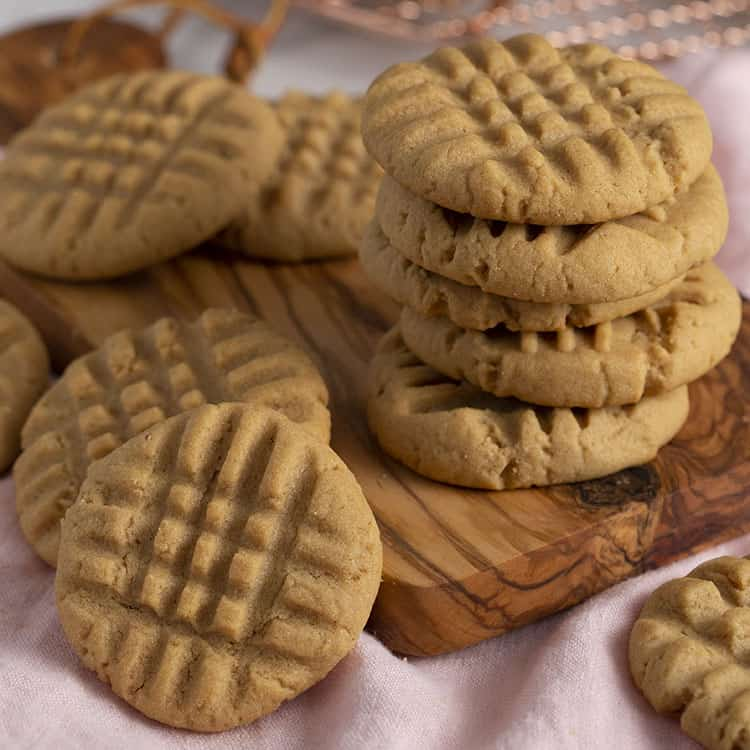

Learn Baking... in just few steps
Learn Baking... in just few steps|  Peanut Butter Cookies |
Ingredients |
|
| 4 1/2 cups all-purpose flour | 2 teaspoons baking soda |
| 2 cups butter, softened | 1 1/2 cups packed brown sugar |
| 1/2 cup white sugar | 2 (3.4 ounce) packages instant vanilla pudding mix |
| 4 eggs | 2 teaspoons vanilla extract |
| 4 cups semisweet chocolate chips | 2 cups chopped walnuts (optional) |
Ingredients |
|
| 1 cup butter, softened | 1 cup packed light brown sugar |
| 1/2 cup white sugar | 2 eggs |
| 2 teaspoons vanilla extract | 1 1/4 cups all-purpose flour |
| 1/2 teaspoon baking soda | 1 teaspoon salt |
| 3 cups quick-cooking oats | 1 cup chopped walnuts |
| 1 cup semisweet chocolate chips |
Ingredients |
|
| 1 cup unsalted butter | 1 cup crunchy peanut butter |
| 1 cup white sugar | 1 cup packed brown sugar |
| 2 eggs | 2 1/2 cups all-purpose flour |
| 1 teaspoon baking powder | 1/2 teaspoon salt |
| 1 1/2 teaspoons baking soda |